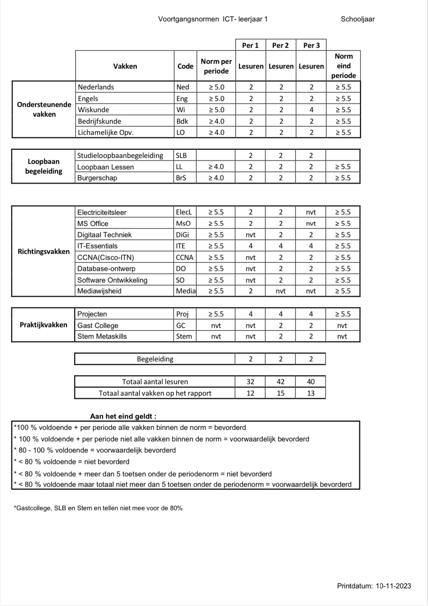
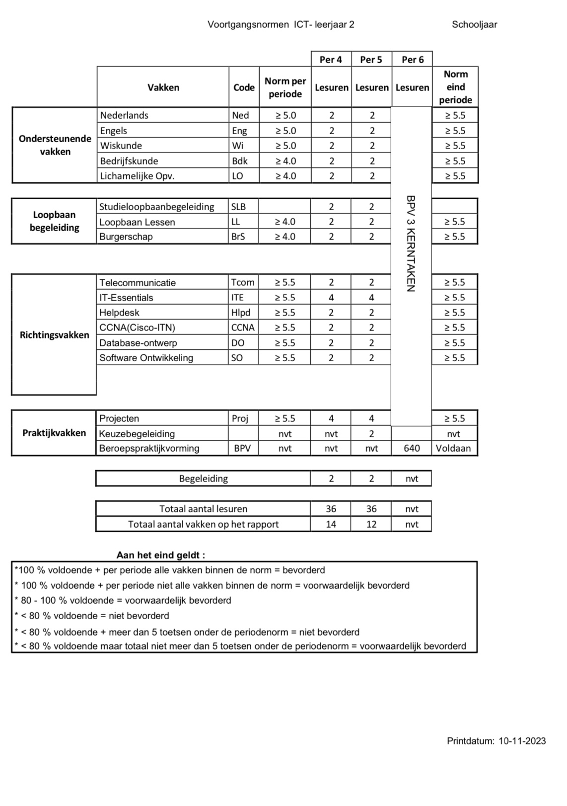
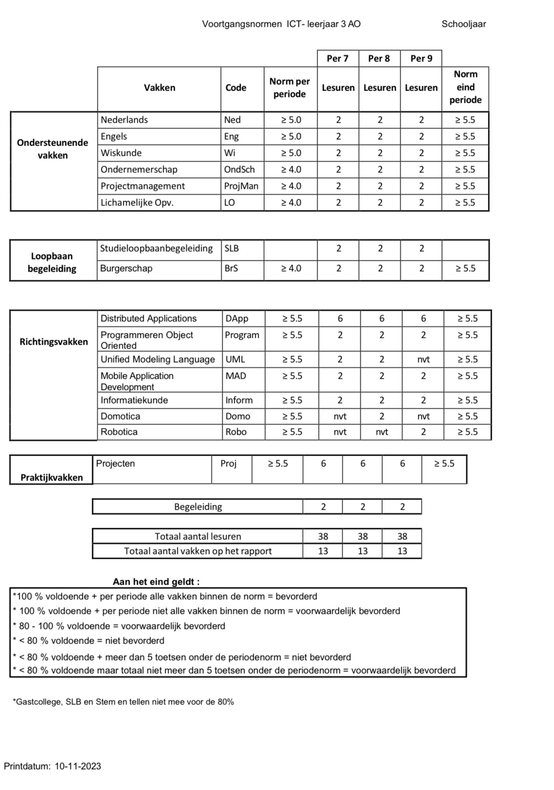
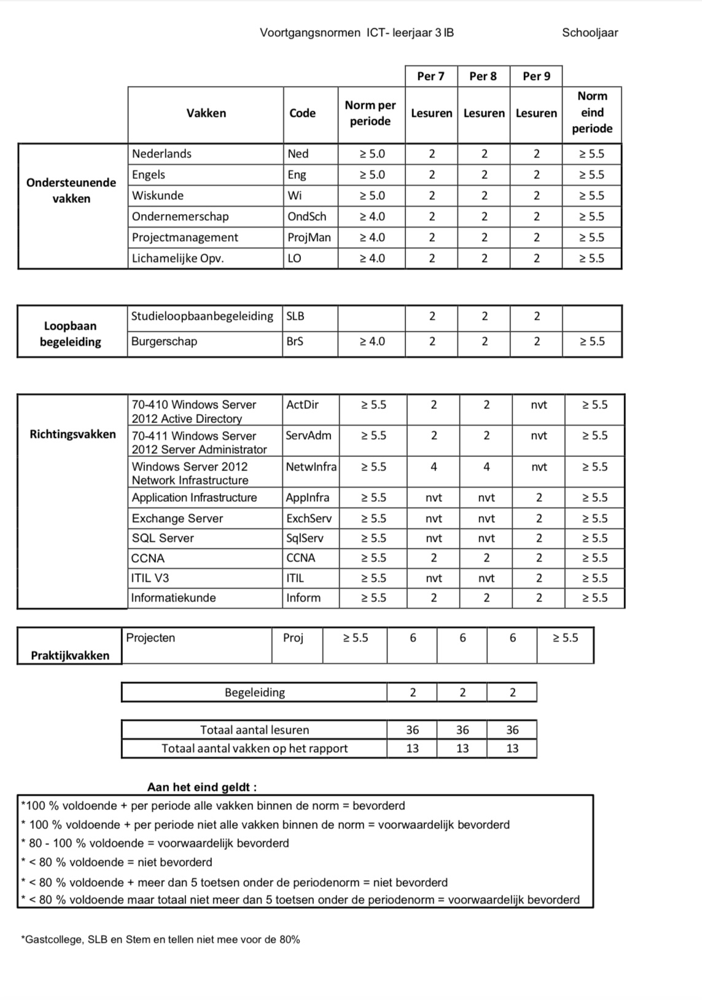
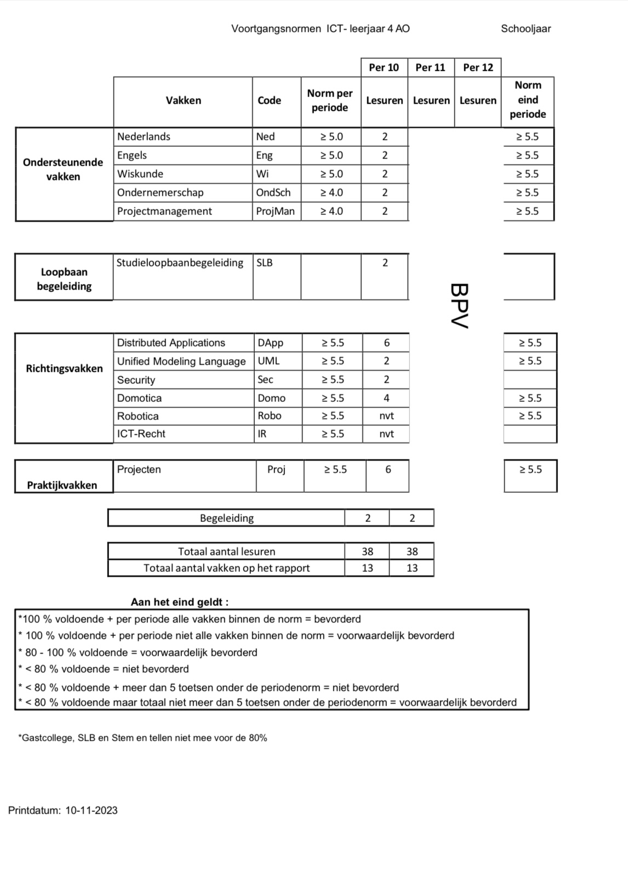
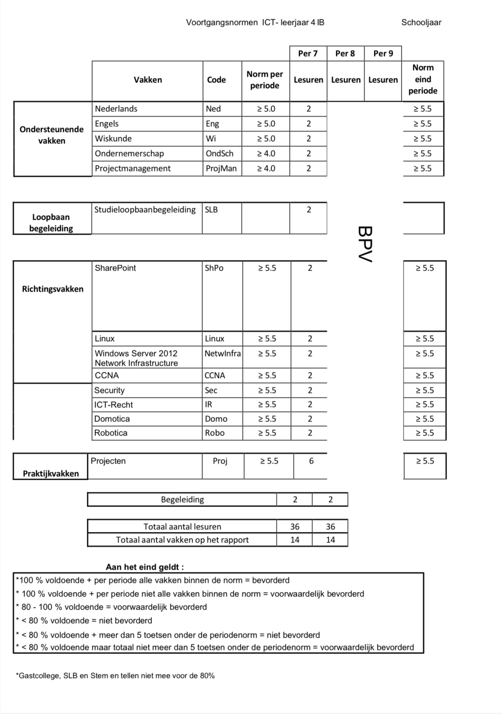

In de volgende secties worden de vakken en hun bijbehorende voortgangsnormen voor elk leerjaar weergegeven.
1e leerjaar MBI

2e leerjaar MBI

3e leerjaar AO

3e leerjaar IB

4e leerjaar AO

4e leerjaar IB

Over Ons
Het Natin is een toonaangevend, ontwikkelingsgericht, dynamisch instituut
dat beroepskader opleidt voor technische, natuurtechnische en laboratoriumsectoren
die deel uitmaken van het bedrijfsleven, de dienstensector
en de overheid van Suriname.